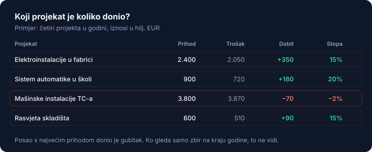
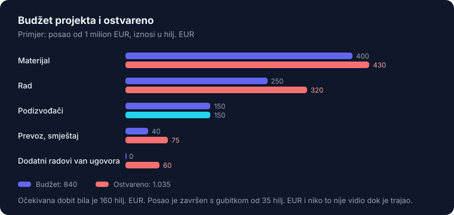

Kako se mjeri profitabilnost projekta? Vidjeti je dok posao traje, a ne kad se završi
U firmama koje rade po projektima dobit se najčešće sazna jednom godišnje. Računovođa izradi bilans i vidi se koliko je firma te godine zaradila. Koji je projekat zaradio, a koji donio gubitak — to se u tom izvještaju ne vidi. U ovom tekstu objašnjavamo zašto se profitabilnost projekta ne uspijeva izmjeriti i šta treba evidentirati da bi se izmjerila.

Šta skriva ukupna dobit?
Ako je firma na kraju godine u plusu, svi odahnu. A u tom zbiru su se možda međusobno poništili poslovi koji dobro zarađuju i poslovi koji donose gubitak. U primjeru ispod firma godinu završava s dobiti, ali je njen najveći projekat u gubitku.

Firma koja ne vidi ovu tabelu naredne će godine za veliki posao iste vrste dati ponudu po istoj cijeni. Rasti bez znanja o tome koja vrsta posla, koji kupac i koja ekipa donose novac znači povećavati i posao koji donosi gubitak.
Zašto se trošak ne knjiži na projekat?
U većini firmi troškovi se evidentiraju; nedostaje podatak kojem projektu trošak pripada. Račun za gorivo ulazi u knjige kao „trošak vozila“. Faktura hotela blizu gradilišta postaje „smještaj“. Kabl kupljen u veleprodaji knjiži se na konto „materijal“. Sve je na pravom kontu, ali se izgubilo za koji je posao potrošeno.
Kod rada je još teže. Ekipa tokom sedmice radi na dva različita gradilišta, a plata joj se na kraju mjeseca isplaćuje u jednoj stavci. Odgovor na pitanje ko je na kojem projektu radio koliko dana nalazi se u evidenciji radnih sati — ako ona uopće postoji.
Tu su i dodatni radovi koji se ne fakturišu. Kupac na terenu kaže „povucimo jedan vod i ovdje“, i ekipa ga povuče. Tog posla nema u ugovoru, niko ne javi uredu, materijal i rad ulaze u trošak projekta, a faktura se nikad ne izda.
Šta treba evidentirati da bi se mjerilo?
Da biste vidjeli profitabilnost projekta, ne treba složen obračun. Dovoljno je uredno voditi četiri stvari.
Budžet na početku projekta
Pri izradi ponude ionako radite obračun troškova. Sačuvajte taj obračun stavku po stavku: materijal, rad, podizvođači, prevoz i smještaj. Neka se zna s čim ćete porediti kad se posao završi.
Šifra projekta na svakom trošku
Narudžbenica, račun za trošak, faktura podizvođača — šta god da je, pri unosu se bira kojem projektu pripada. Kad je to jedno polje obavezno, pola posla je riješeno.
Ko, na kojem projektu, koliko sati
Jednostavna dnevna ili sedmična evidencija rada. Vođa ekipe navečer na telefonu označi ko je tog dana bio na kojem gradilištu. Ne treba preciznost u minutu; podatak na nivou pola dana većini firmi je dovoljan.
Zasebna evidencija dodatnih radova
Svaki zahtjev van ugovora se, prije nego što se uradi, kratkim zapisom javlja uredu i daje kupcu na potvrdu. Tako se i fakturiše i ne kvari osnovni budžet projekta.

Vidjeti dok posao traje
Računanje profitabilnosti nakon završetka posla koristi za sljedeću ponudu. Prava korist je vidjeti je dok posao traje. Ako je potrošeno osamdeset posto budžeta za rad, a pola posla još stoji, velika je razlika saznati to u trećoj sedmici ili nakon isporuke.
Kad to vidite rano, imate izbor. Možete promijeniti ekipu, razgovarati s kupcem o cijeni dodatnih radova, potražiti alternativni materijal. Kad se posao završi, jedino što preostaje jeste prihvatiti gubitak.
Za to je dovoljan jedan ekran koji se pogleda jednom sedmično: za svaki projekat budžet, dosad potrošeno i postotak završenosti posla.
Zar to ne možemo raditi u Excelu?
Za jedan projekat može, i ima firmi koje to rade. Teškoća je u prikupljanju podataka. Nabavka je na jednom mjestu, računi za troškove na drugom, radni sati u svesci, fakture u računovodstvenom programu. Neko bi svake sedmice sve to morao ručno prenositi u jednu tabelu. Od toga se obično odustane u drugom mjesecu.
Doprinos softvera ovdje nije računanje, nego hvatanje podataka na izvoru. Projekat se bira pri unosu narudžbenice, pri fotografisanju računa telefonom, pri unosu radnih sati. Za izvještaj se ne ulaže poseban trud; evidencije se same okupljaju pod projektom.
Alati koji to rade su raznovrsni: ERP sistemi s modulom za projekte, posebni programi napisani za projektno računovodstvo, rješenja razvijena po mjeri firme. Izbor zavisi od toga gdje se trenutno vode nabavka i računovodstvo. Mi radije nadograđujemo postojeći način rada nego što ga rušimo.
Česta pitanja
Kako ćemo opće troškove rasporediti na projekte?
U početku ih nemojte raspoređivati. Prvo knjižite na projekat direktne troškove (materijal, rad, podizvođače, prevoz). Troškovi poput zakupa i uredskog osoblja mogu se kasnije dodati jednostavnim procentom. Već i sam uvid u direktne troškove u većini firmi mijenja sliku.
Zar to već ne radi naš računovođa?
Računovođa vodi zakonske knjige i radi ono što je ispravno s poreske strane. Profitabilnost po projektima nije zakonska obaveza, pa nije ni dio njegovog posla. To je evidencija koju firma vodi radi vlastitog upravljanja.
Šta ako se tim opire unosu sati?
Ne tražite da svako unosi za sebe. Dovoljno je da vođa ekipe jednom dnevno označi ko je bio na kojem poslu, a to se i mnogo lakše prihvata.
Naše povezane usluge: ERP za inženjerske i izvođačke firme, ERP rješenja za mala i srednja preduzeća.
Izračunajte stvarnu dobit jednog posla
Unesite iznos ponude i troškove; prividnu dobit i stvarnu dobit sa satima tima vidite jednu pored druge.
Otvori kalkulatorKoji vaš posao zarađuje?
Napravimo zajedno pregled budžeta i ostvarenog za jedan vaš projekat.
Razgovarajmo o vašem projektu